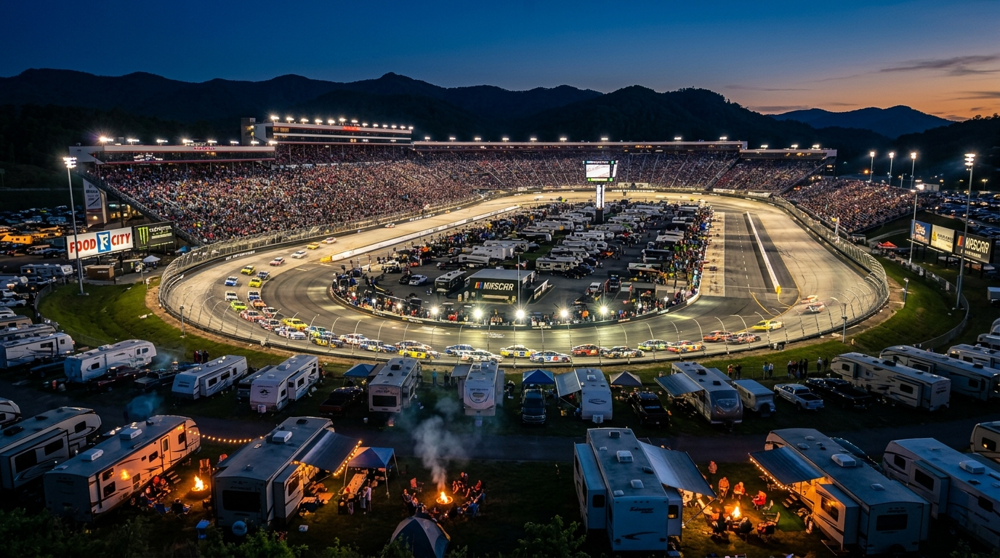

There is nothing in motorsports quite like arriving in Northeast Tennessee and feeling the ground rumble as high-horsepower stock cars echo through the Appalachian hills. Nicknamed "The Last Great Colosseum" and "Thunder Valley," Bristol Motor Speedway is an iconic 0.533-mile concrete oval banked at a staggering 24 to 28 degrees. Whether you are traveling for the daylight action of the Food City 500 in spring or the high-stakes playoff cutoff under the lights at the Bass Pro Shops Night Race in September, camping is the definitive way to experience race week. This Bristol Motor Speedway camping guide delivers everything you need for race weekend camping Bristol fans love—from RV hookups and packing checklists to traffic tips and race-day logistics.
🏟️ The Bristol Experience: Spring Classic vs. Fall Night Race
Bristol Motor Speedway hosts two premier NASCAR Cup Series race weekends each year, each with its own personality:
The Spring Classic: Food City 500 (April). Held each April as Appalachian dogwoods bloom, this 500-lap Sunday afternoon contest delivers pure short-track warfare. Daytime track temperatures fluctuate as cloud cover shifts across Sullivan County, causing the concrete surface to lose grip and demanding relentless tire management. Bump-and-run passes, fierce tempers, and door-to-door racing make the spring race a purist's dream. Campers enjoy crisp mountain mornings, mild tailgating, and refreshing spring breezes.
The Crown Jewel: Bass Pro Shops Night Race (September). Serving as the elimination cutoff in the NASCAR Cup Series Playoffs Round of 16, forty drivers battle under 10,000 stadium floodlights with seasons on the line. Brake rotors glow red-hot into Turn 1, sparks shower against the outside wall, and deafening exhaust roars echo across the valley. The campground atmosphere is electric from Thursday check-in straight through Sunday morning.
🗓️ 2026–2027 Bristol Race Schedule & Dates
Locking down travel dates early is essential, as campsites near Thunder Valley book out quickly:
🏁 Fall 2026: Bass Pro Shops Night Race Weekend (Sept 17–19, 2026)
- Thursday, Sept 17: UNOH 200 (Truck Series) & Bush's Beans 200 (ARCA)
- Friday, Sept 18: Food City 300 (NASCAR Xfinity Series)
- Saturday, Sept 19: Bass Pro Shops Night Race (Cup Series Playoff Cutoff • 7:30 PM ET)
🌸 Spring 2027: Food City 500 Weekend (April 9–11, 2027)
- Friday, April 9: NASCAR Cup & Xfinity Practice and Qualifying
- Saturday, April 10: Xfinity Series 250 & Truck Series Race
- Sunday, April 11: Food City 500 (NASCAR Cup Series • 3:30 PM ET)
🌙 Fall 2027: Bass Pro Shops Night Race Weekend (Sept 16–18, 2027)
- Thursday–Saturday: NASCAR Playoff tripleheader under the lights.
*Tip: Most seasoned campers arrive Wednesday or Thursday to beat incoming highway traffic and settle in early.
⛺ Why Camping Beats Hotels for Race Weekends
Hotels in Bristol, Johnson City, and Kingsport often surge past $400 to $600 per night during NASCAR weekends, requiring non-refundable 3-night minimums. Beyond substantial cost savings, camping is superior for three reasons:
🚗 Bypass Brutal Post-Race Traffic
When 100,000 fans leave after the checkered flag, Highway 11E and TN-394 gridlock for 2 to 3.5 hours. When you camp within walking distance at Bristol Hilltop Camping (just 0.9 miles away), you simply stroll 15 minutes back to camp, grab a cold drink, and unwind while highway traffic idles.
🥩 Authentic Tailgate Camaraderie
The smell of smoked barbecue and sounds of bluegrass music fill the mountain air. Neighbors share ice, tools, and race picks, building friendships that last for decades.
🏡 Total Comfort & Control
Sleep in your own bed, use your private restroom, cook your favorite meals, and skip crowded restaurant wait times across Sullivan County.
🚐 Types of Camping at Bristol: Which One Is Right for You?
Choosing your campsite setup correctly is key to learning how to camp at Bristol Motor Speedway comfortably:
Full Hookup RV Sites (Water, 30/50A Electric, Sewer): The gold standard for race week. Shore power lets you run dual air conditioners during warm September afternoons or heaters on cool April evenings. City water and sewer hookups eliminate water rationing and dump station lines.
Partial Hookup Sites (Water & Electric): Popular for pop-ups and smaller travel trailers. You enjoy power and pressurized water, but must monitor holding tanks or schedule third-party pump-out services.
Tent Camping: An economical, immersive outdoor experience. Choose campgrounds situated on elevated, well-drained grassy ground with mountain breezes rather than dusty roadside fields.
Dry Camping & Boondocking: Parking in open pastures without utility connections. Requires onboard battery power and generator usage subject to overnight quiet hours (typically 11:00 PM to 7:00 AM).
🎒 What to Bring: Race Weekend Camping Checklist
Proper preparation ensures a smooth trip. Keep this handy checklist when packing:
🔧 Campsite & RV Gear
- Surge Protector (30A/50A): Protects RV electronics from power grid surges.
- Water Pressure Regulator: Caps campground water pressure at a safe 45–50 PSI.
- Drinking Water Hose & Sewer Kit: 25–50 ft drinking-safe hose, plus sewer hose with clear elbow and support bridge.
- Leveling Blocks & Chocks: Keeps your rig stable on rolling Appalachian terrain.
- 10x10 Pop-Up Canopy & Heavy Stakes: Provides shade; spiral stakes secure against mountain wind gusts.
- Outdoor Lighting & Grill: LED lanterns, camp chairs, portable griddle, and fuel.
🎧 Trackside & Race Day Gear
- Over-Ear Hearing Protection: Decibels inside the bowl exceed 130–140 dB. Earmuffs (NRR 25+) are essential.
- Racing Scanner & Headsets: Listen live to driver, spotter, and crew chief communications.
- Clear Bag & Soft Cooler (Max 14x14x14 inches): BMS requires clear bags; soft coolers may contain ice, canned beer, sodas, and snacks (NO glass, NO liquor).
- Stadium Bleacher Cushion: Padded seat with back support for comfort across 500 laps.
- Sun & Rain Gear: Sunglasses, sunscreen, hat, and rain ponchos (umbrellas prohibited during green flags).
- Sharpie Marker: Handy for pre-race driver autographs in the Fan Zone.
🗺️ Getting to Bristol: Driving Directions from I-81 & Traffic Tips
Bristol Motor Speedway is located off Highway 11E (Volunteer Parkway) in Sullivan County, Tennessee, between downtown Bristol and Johnson City.
From I-81 Northbound: Take Exit 69 for TN-394 East toward Blountville / Bristol Motor Speedway. Follow TN-394 for 9 miles directly toward the speedway and Hilltop Street.
From I-81 Southbound: Take Exit 3 in Virginia onto I-381 South into Bristol. Continue onto Commonwealth Avenue, cross historic State Street onto US-11E South, and drive 5 miles to the speedway area.
From Tri-Cities Airport (TRI): Located 14 miles away, take TN-75 North to TN-394 East for an easy 15- to 20-minute drive.
Race Day Traffic: TDOT and Highway Patrol implement one-way contraflow patterns on TN-394 and US-11E before and after Cup races. By staying within walking distance, you park once upon arrival and never get trapped in post-race parking exits.
🏎️ Race Day Insider Tips: Gates, Noise, Coolers & Fan Zone
Maximize your race day with these proven NASCAR camping tips Bristol TN visitors rely on:
- Gate Opening & Fan Zone: Gates open 3 to 4 hours before green flag. Arrive early to clear security and explore the Fan Zone outside Turns 1 and 2 for live concerts, driver appearances, and souvenir haulers.
- BMS Cooler Policy: One soft-sided cooler (14x14x14 inches) and one clear bag per fan. Pack canned beer, sodas, and sandwiches. Hard coolers, glass bottles, and outside liquor are banned.
- Deafening Decibels: Sound echoes relentlessly off the 360-degree concrete grandstands, easily reaching 135+ dB. Over-ear protection is vital for all ages.
- Scanner Upgrades: A Racing Electronics scanner lets you hear spotters call out crashes before you see smoke, delivering unmatched race insight.
⛅ Weather Considerations: Spring vs. Fall in the Mountains
Appalachian weather requires seasonal preparation:
Spring (Food City 500 • April): Afternoon highs range from 58°F to 70°F, dropping into the upper 30s or low 40s after dark. Mountain showers can roll in rapidly, so pack waterproof boots, a rain jacket, warm layers, and ground tarps.
Fall (Bass Pro Shops Night Race • September): Afternoon temperatures hover in the pleasant mid-70s to low-80s, cooling into the crisp 50s once the stadium lights turn on. Heavy morning dew coats awnings and tents, so keep microfiber towels handy.
🏕️ Where to Camp: Why Our Hilltop Campground Is the Premier Choice
While track-owned pasture lots can be noisy and crowded, Bristol Hilltop Camping (located at 133 Hilltop Street, Bristol, TN 37620) offers a scenic, peaceful ridge setting just 0.9 miles from the Bristol Motor Speedway main gates.
Campers choose our family-owned grounds for three reasons:
- 0.9-Mile Walk to Gates: Stroll 15 to 20 minutes to your grandstand seat (and 1.2 miles to the south gate), avoiding all highway traffic.
- Full Hookups & Scenic Tent Sites: 30/50-amp electricity, city water, and direct sewer connections, plus clean, well-drained tent spaces.
- Long-Term RV Lot Rentals: In addition to race weekends, Bristol Hilltop Camping specializes in monthly and yearly camper lot rentals. It is an affordable, scenic haven for traveling healthcare workers, contractors, retirees, and avid race fans. Call (423) 383-5373 to check rates and availability.
🗺️ Beyond the Track: Explore Bristol Landmarks
Turn your race weekend into an Appalachian getaway:
- Thunder Valley Dragway: Bristol Dragway sits adjacent to the speedway, hosting NHRA drag racing and car shows.
- Downtown Bristol State Street: Stroll the historic street where the double-yellow line divides Tennessee from Virginia, exploring local craft breweries and restaurants.
- Birthplace of Country Music Museum: Smithsonian-affiliated museum in downtown Bristol celebrating the historic 1927 Bristol Sessions.
- South Holston Lake & River: Located 15 minutes away, featuring boating, paddleboarding, and world-class blue-ribbon trout fly fishing.
- Appalachian Trail: Hiking trailheads in the Cherokee National Forest are less than 30 minutes away.
❓ Frequently Asked Questions About Bristol Race Camping
Common questions from race fans preparing to camp near Thunder Valley:
Bristol Hilltop Camping is located at 133 Hilltop Street, just 0.9 miles from the Bristol Motor Speedway main entrance and 1.2 miles from the south entrance—an easy 15- to 20-minute walk.
Yes! Walking to the track allows campers to bypass the notorious 2- to 3-hour post-race traffic gridlock on Highway 11E and Volunteer Parkway.
Sites feature full hookups with municipal fresh water, 30-amp and 50-amp electrical service, and direct in-ground sewer connections, plus scenic tent spaces.
Fans may bring one soft-sided cooler (up to 14x14x14 inches) and one clear tote bag (up to 14x14x14 inches). Canned beer and snacks are permitted; glass bottles and liquor are prohibited.
Yes. Bristol reaches 130 to 140 decibels, making ear protection mandatory. A racing scanner lets you listen live to driver, spotter, and crew communication.
Full hookup RV sites within walking distance sell out months in advance. Call (423) 383-5373 as soon as you have your race tickets.
Yes! Monthly and yearly camper lot rentals are our primary year-round service, offering full hookup long-term lots for traveling workers, retirees, and avid race fans.
🏁 Secure Your Bristol Camping Adventure Today
There is nothing like the energy of Bristol on race day—the roar of engines echoing off Appalachian ridges, the smell of barbecue, and campfires under the stars. Skip the overpriced hotels and traffic gridlock. Choose our hillside campground as your race weekend home base and experience NASCAR the way it was meant to be enjoyed.